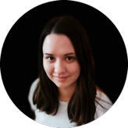

People
Betti Hegyi
Jiayi Ye
PhD student, Dept. of Earth Sciences, ETH Zurich
Fluid-driven earthquake cycles in subduction zones
Supervisors: Prof. Dr. Whitney Behr; Dr. Luca Dal Zilio
PhD student, Dept. of Earth Sciences, ETH Zurich
Solid-fluid interactions and grain size evolution on seismic and aseismic fault slip
Supervisor: Dr. Luca Dal Zilio
PhD student, Swiss Seismological Service, ETH Zurich
Fault unclamping induced by fluid injection and tunnelling
Supervisors: Dr. Antonio Rinaldi; Prof. Dr. Stefan Wiemer
Danyang Jiang
